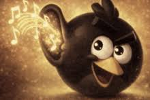

Aplikace sleduje obraz z webkamery. Když po dobu delší než 300 ms detekuje gesto „zvednutý ukazováček, ostatní prsty schované“, spustí hudbu na Spotify a zobrazí přes obraz animovaný meme overlay.

Pro spuštění na lokálu použij Live Server (viz instrukce dole na stránce nebo v přiloženém README).